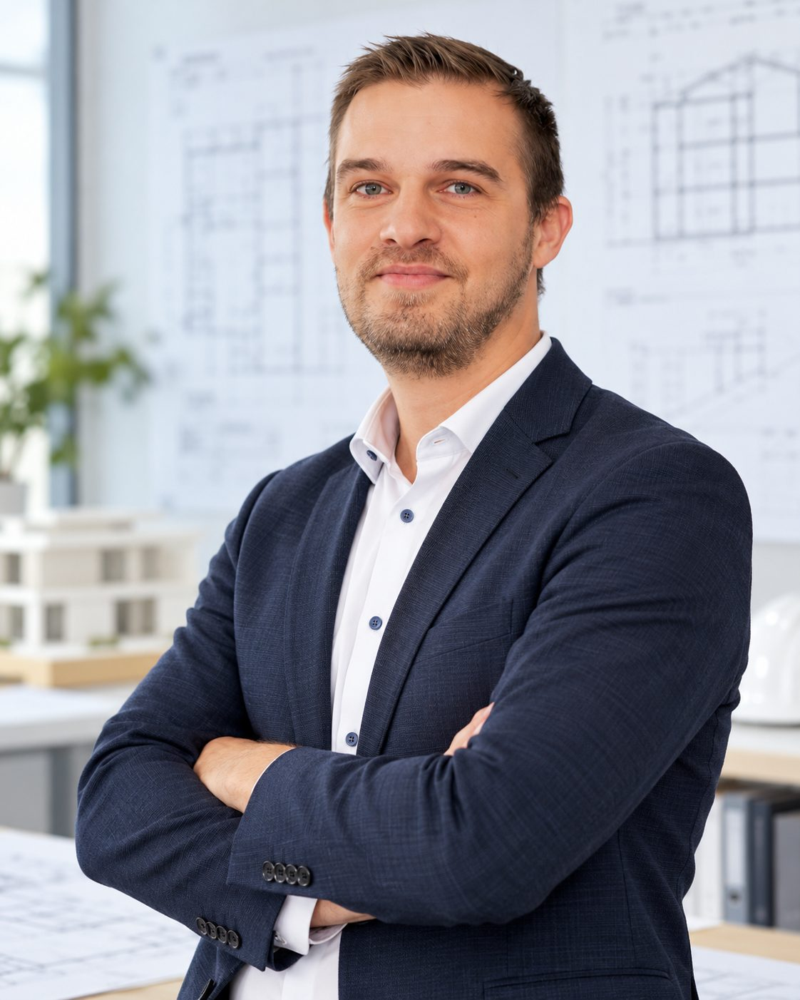

Präzise
Aufmaß, Mengen, Termine und Kosten werden sauber erfasst und dokumentiert. Fakten vor Floskeln – auf der Baustelle wie im Bericht an den Bauherrn.
Ingenieurwissen, Baustellenerfahrung in dritter Generation und eine klare Haltung: Kunden nah betreuen, Risiken früh erkennen, Auftraggeber vor Schaden bewahren.

Bereits mit acht Jahren durfte ich Vater und Großvater im Baugewerbe unterstützen. Als dritte Generation eines kleinen Bauunternehmens wurde mir das Bauwesen samt selbstständiger Arbeit in die Wiege gelegt.
Nach dem Studium und einiger Zeit in der freien Wirtschaft als Bau- und Projektmanager wurde mir klar, wo der größte Hebel für Auftraggeber liegt. So gründete ich 2021 mit der Unterstützung einiger Kollegen ein kleines Ingenieurbüro, das sich zur Aufgabe macht, Kunden nah zu betreuen, die Unwägbarkeiten des Bauwesens aufzuschlüsseln und damit den Endkunden vor Schaden zu bewahren.
Stand 2026 betreibe ich dies nun fünf Jahre erfolgreich für öffentliche und private Auftraggeber auf komplexen Baustellen – mit stets offener und ehrlicher Kommunikation. Aus „Baumanagement Herge“ wurde BH Infracon – Civil Consulting: derselbe Anspruch, ein klareres Profil.
— Jörg Herge, Bauingenieur (M.Eng.)
Drei Grundsätze, die jede Bauleitung, jede Abrechnungsprüfung und jedes Beratungsgespräch bei BH Infracon prägen.
Aufmaß, Mengen, Termine und Kosten werden sauber erfasst und dokumentiert. Fakten vor Floskeln – auf der Baustelle wie im Bericht an den Bauherrn.
Unsere Prüfungen, Nachtragsbewertungen und Abnahmen halten der Diskussion stand – technisch, vertraglich und im Zweifel auch vor Gericht.
Ein Ansprechpartner, klare Zusagen, offene Kommunikation. Auch wenn es unbequem wird – gerade dann.
Neuausrichtung des Ingenieurbüros unter neuem Namen. Schwerpunkte: Flughafeninfrastruktur, Rohrvortrieb und Leitungsbau, Erschließung, Claim Management für öffentliche und private Auftraggeber.
Eigenständiges Ingenieurbüro für Bauleitung, Bauüberwachung und Projektleitung in Weiterstadt. Projekte u. a. für Fraport AG, Fraport Ausbau Süd GmbH, Hydranten Betriebs OHG, Westnetz GmbH, Interxion, Bonava GmbH und den Landkreis Darmstadt-Dieburg. Technische Federführung in Arbeitsgemeinschaften mit Schnorpfeil Rhein-Main, Sonntag Baugesellschaft, Reinhard Rohrbau und Bickhardt Bau.
Verantwortung für Bauleitung und Projektmanagement im Tief- und Straßenbau auf Unternehmerseite – die Grundlage für den heutigen Blick auf Bauabläufe, Kalkulation und Nachträge.
Vertiefung im konstruktiven Ingenieurbau und Baubetrieb. Berufsbezeichnung: Bauingenieur (M.Eng.).
Erste Baustellenerfahrung mit acht Jahren im Bauunternehmen von Vater und Großvater. Handwerkliches Verständnis, das bis heute jede Bauüberwachung prägt.
Berufshaftpflichtversicherung: VHV Allgemeine Versicherung AG, Hannover. Geltungsraum: Deutschland.
Büro in Weiterstadt bei Darmstadt – in 20 Minuten am Flughafen Frankfurt, in 30 Minuten in der Frankfurter Innenstadt. Projekte deutschlandweit auf Anfrage.
Öffentliche und private Auftraggeber sowie Bauunternehmen, mit denen wir in Arbeitsgemeinschaften zusammenarbeiten.
Ein kurzes Telefonat genügt, um zu klären, ob und wie wir Ihr Bauvorhaben unterstützen können.